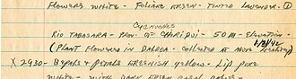

Thoughts on, and examples of, notes from out in the field. Collections of musings, sketches, facts, observations, and impressions.

What counts as a field notebook?
Why I keep them, how, and where
Out in the field and indoors
Following my curiosity, looking closely
[1] -
[2] -